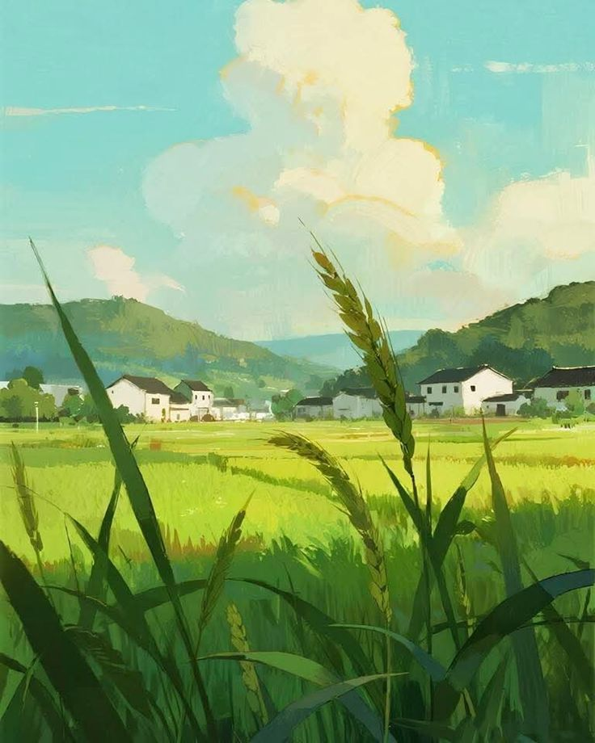
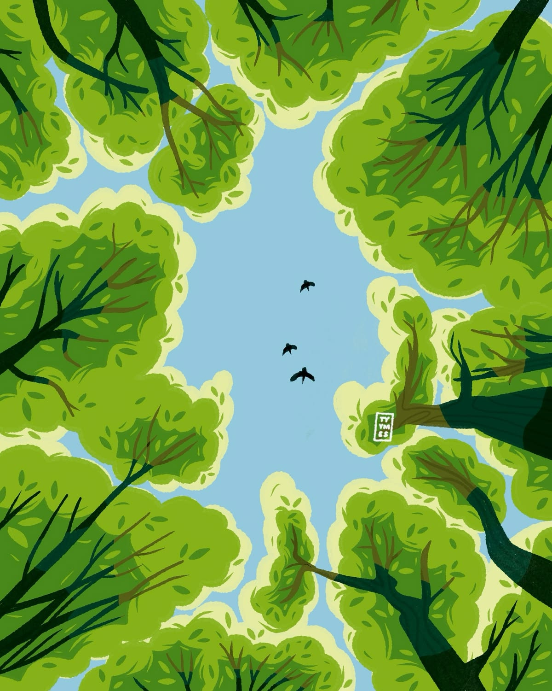

Plan
ahead.
Stay
ground
ed.
Stress-test a community microgrid across thousands of futures. Find where resilience fails — then prove the smallest intervention that survives.
Why it matters
Climate plans
should be
provable.
Averages hide the moment a community actually fails. A plan can look safe on paper, then collapse when heat, cloud cover, EV demand, and a grid outage arrive together — exactly when a hospital cannot afford uncertainty.
Grounded turns that uncertainty into evidence. It simulates the energy balance every fifteen minutes, reconstructs the causal chain behind each failure, and tests interventions against the exact same future until resilience is proven.

Our mission
Every tree is earned by evidence. Every building marks a resilience gain we actually proved.
Energy decisions in every simulated day — tracking generation, storage, demand, and grid availability at fifteen-minute resolution.
What
Grounded
does.
Six capabilities, working together — from a living microgrid to a reproducible recommendation a judge can inspect and challenge.
Four steps.
One proof.
Model the microgrid
Start with a living system of solar generation, battery storage, homes, EV charging, the grid, and critical hospital demand.
Explore climate futures
Run hundreds of reproducible futures and a five-hazard matrix to expose the conditions that turn ordinary stress into cascading failure.
Find a resilient plan
Search every candidate intervention and inspect the Pareto frontier across risk reduction, disruption, and emergency reserve.
Prove the difference
Replay the same seed before and after the chosen plan, then save the verified gain as permanent evidence in the resilience forest.
"Resilience is not a promise. It is a plan that has survived the future before the future arrives."
Grounded — built for NextStep Hacks 2026
Evidence
judges can
interrogate.
Every number below comes from the working simulation pipeline — deterministic, backend-validated, and visible in the live dashboard.
A community should not have to wait for a blackout to learn that its resilience plan was fragile.
Emergency planners can trace exactly why critical infrastructure failed — and which intervention changes the outcome.
Use case 01 — critical infrastructure
Researchers can compare hazards and policies on identical seeded futures, making every conclusion reproducible.
Use case 02 — climate research
Proof, not
predictions.
The dashboard is not a mockup. Every panel drives the same deterministic simulation engine, from multi-hazard stress testing to the final same-seed counterfactual.
Ready
to get
ground
ed?
Build a microgrid, break it across thousands of possible futures, and prove the smallest plan that keeps critical infrastructure alive.